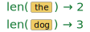
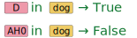
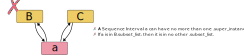
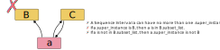
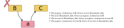

from aligned_textgrid import AlignedTextGrid
from aligned_textgrid import Word, Phone
the_dog = AlignedTextGrid(
textgrid_path="../resources/the_dog.TextGrid",
entry_classes=[Word, Phone]
)
AH0 = the_dog.tier_groups[0].tier_list[1].sequence_list[1]
dog = the_dog.tier_groups[0].tier_list[0].sequence_list[1]Sequence Interval Properties
Let’s begin with this textgrid.
The behavior of len(), in and iteration
len()
If you pass a Sequence Interval to len(), it’ll return the length of its .subset_list.

len(dog)3If a Sequence Interval doesn’t have a .subset_list, then len() will return 0.
len(AH0)0in
If you want to check whether a specific sequence interval (the actual object, not just the label) is in the .subset_list of another, you can use in.

AO1 = dog[1]
AO1 in dogTrueAH0 in dogFalseIteration
A Sequence Interval is iterable over its .subset_list
for segment in dog:
print(f"{segment.label} is in {segment.inword.label}")D is in dog
AO1 is in dog
G is in dogSubset Sequence Information
In addition to the .start, .end and .label information about each Sequence Interval, if it also has a .subset_list, that same information is accessible with .sub_starts, .sub_ends and .sub_labels.
dog.sub_startsarray([0.30829161, 0.41950136, 0.83568509])dog.sub_endsarray([0.41950136, 0.83568509, 0.96658691])dog.sub_labels['D', 'AO1', 'G']This is a safe way to check if a general phone label is within a word, since just using in on the sequence interval itself checks against specific Sequence Interval objects.
# the label "G" is not a Sequence Interval
"G" in dogFalse"G" in dog.sub_labelsTrueHierarchy Strictness
The hierarchy and precedence structure is very “strict”.
- A Sequence Interval
acan have no more than one.super_instance - If
a.super_instanceisB, thenais inB.subset_list. - If
ais inB.subset_list, then it is in no other.subset_list. - If
ais inB.subset_list, thena.super_instanceisB - If
ais not inB.subset_list, thena.super_instanceis notB - If
a.super_instanceis notB, then it is not inB.subset_list
Some examples of relationships that cannot be represented are:



Class Strictness
Another source of strictness is the Sequence Interval class. You can get the class of a specific interval with type()
type(AH0)aligned_textgrid.sequences.word_and_phone.Phonetype(dog)aligned_textgrid.sequences.word_and_phone.WordA horizontal strictness of classes is that the .fol and .prev Segment Intervals must be of the same class.
try:
dog.set_fol(AH0)
except Exception as exc:
print(exc)Following segment must be an instance of WordEach class also defines what its (one and only) .superset_class and .subset_class is. For classes at the top of the hierarchy, there is a reserved Top class, and for classes at the bottom of the hierarchy, there is a reserved Bottom class.
Word.subset_classaligned_textgrid.sequences.word_and_phone.PhoneWord.superset_classaligned_textgrid.sequences.word_and_phone.Top_wpIf a Sequence Interval isn’t the right class, it can’t be added to another’s .subset_class or set as its .super_instance.
try:
AH0.append_subset_list(AO1)
except Exception as exc:
print(exc)The subset_class was defined as Bottom_wp, but provided subset_instance was Phonetry:
AH0.set_super_instance(AO1)
except Exception as exc:
print(exc)The superset_class was defined as Word, but provided super_instance was PhoneReuse
GPLv3